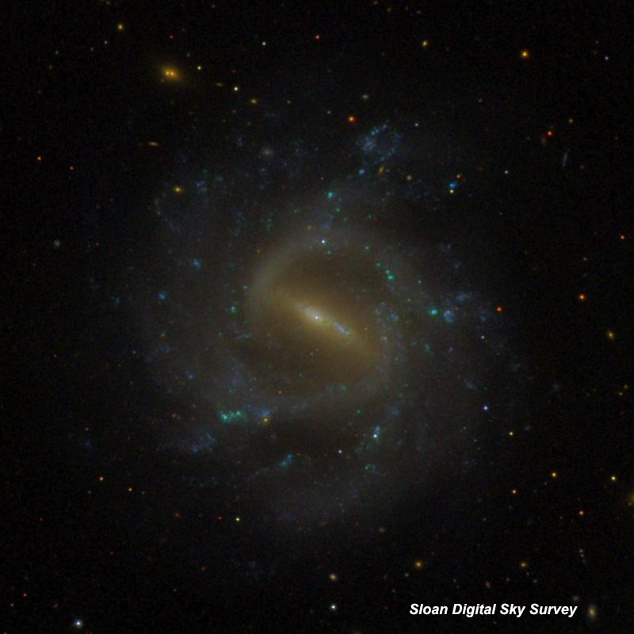
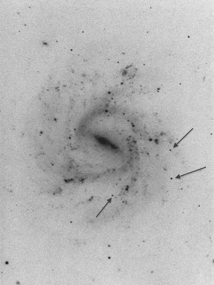
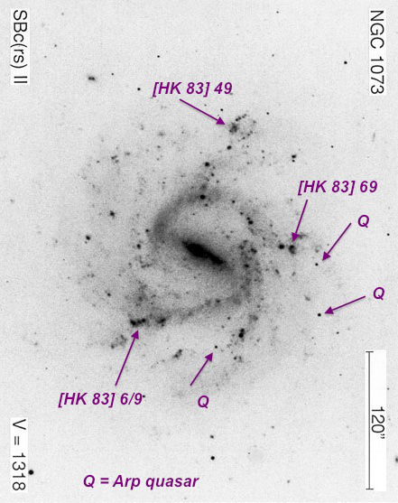

The Tale of NGC 1073 and Arp's 3 Quasars
- NGC 1073 = UGC 2210 = MCG +00-08-001 = CGCG 389-002 = PGC 10329 02 43 40.3 +01 22 33
- V = 11.0; B = 11.5; Size 4.9'x4.5'; Surf Br = 14.2; PA = 15°
- Type: SB(rs)c
It's been nearly a year since the passing of the iconoclast astronomer Halton Arp and I thought I would highlight an interesting galaxy that created a large rift between Arp and the mainstream astronomical community. WH discovered NGC 1073 on 9 Oct 1785 and recorded "vF, vL, lbM, easily resolvable, 6' or 7' diameter". He placed it in his classification class III of "Very faint nebulae". The comment "easily resolvable" is probably due to numerous HII knots and its uneven surface brightness. Surprisingly, John Herschel never observed this galaxy and it was not searched for with Lord Rosse's 72".

In 1979, Halton Arp and Jack Sulentic published the paper Three quasars near the spiral arms of NGC 1073. The abstract for this paper begins "Spectra of three quasars discovered within an area of 12 sq arcmin centered on the spiral galaxy NGC 1073 are analyzed. It is found that each quasar has its most
prominent emission line at nearly the same wavelength in the region observed, that each of these lines is associated with a different major quasar line, and that the three quasars have different redshifts. An upper limit of one in a thousand is placed on the probability of chance occurrence...." I've indicated the location of the three quasars on this image of NGC 1073 from the Carnegie Atlas of Galaxies

Arp proposed that the quasars were ejected from NGC 1073, perhaps along the spiral arms, and that the redshifts were quantized at preferred values (z = 0.6, 1.4, 1.9). Despite the high redshifts, Arp argued the quasars were associated with galaxy and not cosmological in origin. In his book "Quasars, Redshift and Controversies", Arp says the three quasars in NGC 1073 were checked by other Caltech astronomers, who refused to publish their confirmation and ignored the result. This paper, and a few others that followed, led to a written warning from the allocation committee for the Palomar 200-inch, threatening to cut off his observing time unless he promised to refrain from continuing this line of investigation. His observing time at Palomar was terminated in 1984 and he was effectively ostracized from the mainstream astronomical community.
For a more recent paper on the topic, see Associations of High-Redshift Quasi-Stellar Objects with Active, Low-Redshift Spiral Galaxies. Although Burbidge and Napier claim a statistically significant clustering of quasars around Arp's low-redshift (often active) galaxies, no excess was found using a much larger dataset pulled from the SDSS. NGC 1073 was observed in Jimi's 48-inch in October, along with Akarsh Simha, Bob Douglas and Alan Agrawal. My notes are below. Separations in [brackets] were measured on Aladin afterwards and the HII designations are from Hodge and Kennicutt's 1983 "An Atlas of HII Regions in 125 Galaxies". At 488x; the central bar is very bright and well-defined, extending 1.0'x0.3' SW-NE. An easily visible spiral arm is attached at the northeast end of the bar and extends at a right angle to the northwest, passing through a mag 16 star [50" N of center]. The arm then dims but sweeps clockwise around the west side, and merges with the second arm attached at the southwest end of the bar. As a result, the galaxy appears to have a single continuous arm rotating ~270° and ending on the southeast side, ~1.2' from center! The outer part of the halo has a low surface brightness but extends at least 4' in diameter. Another mag 16 star is on the southwest side of the halo [1.4' from center]. At least three HII complexes were identified. The brightest is NGC 1073:[HK 83] 6/9, an elongated patch ~13"x8" E-W, situated at or just beyond the southeast end of the spiral arm, 1.4' from center. A small, fainter knot close west, [HK83] 19, was difficult to resolve. [HK83] 69, a faint 10" knot, is on the west side of the halo (beyond the arm), 1.4' due west of center. Finally, [HK83] 49 is a third 10" knot of low contrast in the northwest outer halo [1.9' NNW of center]. The HII regions (along with the quasars) are labeled in this image

We didn't look for the 3 quasars. The Veron Catalogue of Quasars lists them at mag 19 and 20, so obviously will require some serious aperture. Has anyone given them a try? What aperture will reveal the arm structure? Can you identify some of the HII knots? GIVE IT A GO AND LET US KNOW!